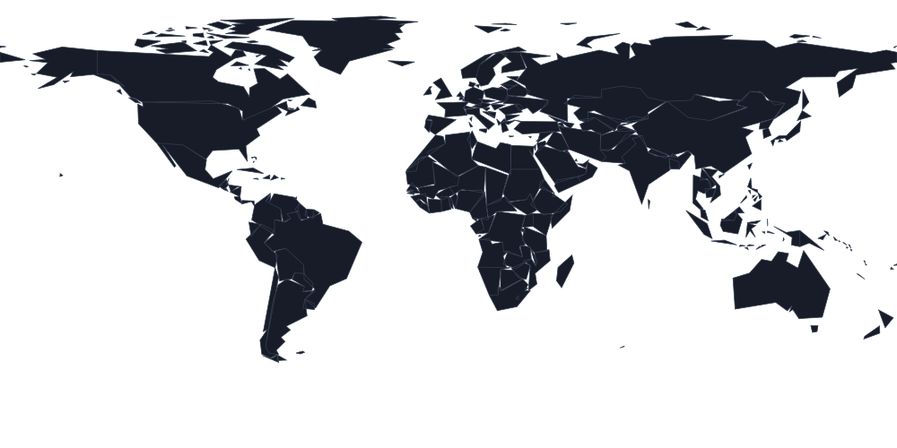

NEW UPDATE
LATEST CHANGE · UPDATE #029
新增 AUTO / DARK / LIGHT 主题切换
顶部现在可以即时切换浅色与深色外观；AUTO 会跟随系统主题，手动选择会保存在当前浏览器中。
一个用于检查 GitHub Pages 部署、JavaScript 执行、浏览器信息、响应式布局和访问分布的测试网站。访客地图已改为页面自带的 SVG 世界地图，不再依赖 Google 地图资源。
顶部现在可以即时切换浅色与深色外观；AUTO 会跟随系统主题，手动选择会保存在当前浏览器中。
按这四步走一遍，就能快速检查页面最重要的部署、浏览器与地图功能。
实时更新；页面进入后台时暂停计时器。
调整窗口大小可测试响应式页面。
记录当前页面会话运行测试的次数。
总访问计数与地图数据完全独立。

世界地图已随 HTML 本地加载；正在读取本次访问的粗略 IP 位置和历史国家统计。
IP 定位仅用于取得国家/地区与近似坐标；绘制前坐标会粗化到 5° 网格，完整 IP 和原始坐标不会被本站保存。历史统计仍使用国家级公共计数器，并采用渐进加载，因此统计接口失败不会让地图本身消失。